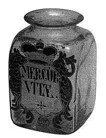

ŞEKİL 65. Avrupa’nın başka hiçbir ülkesinde eczacıların cam kapları Almanya’da olduğu kadar değişik renklere boyalı süslemelere sahip değildi. Şekildeki şişenin üzerinde, ünlü hekim Paracelsus’un MERCUR(IUS) VITAE diye adlandırdığı, antimon triklorürün suya ilavesi ile hazırlanan ve genellikle kusturucu olarak kullanılan preparatın adı yer almaktadır (Alman Eczacılık Müzesi, Heidelberg).47